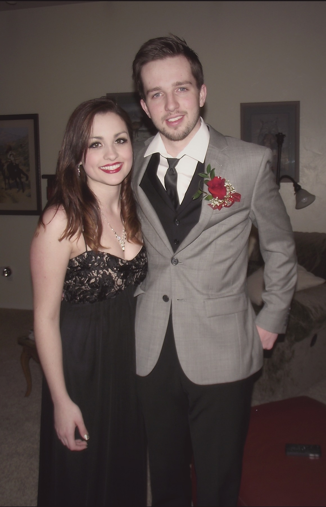
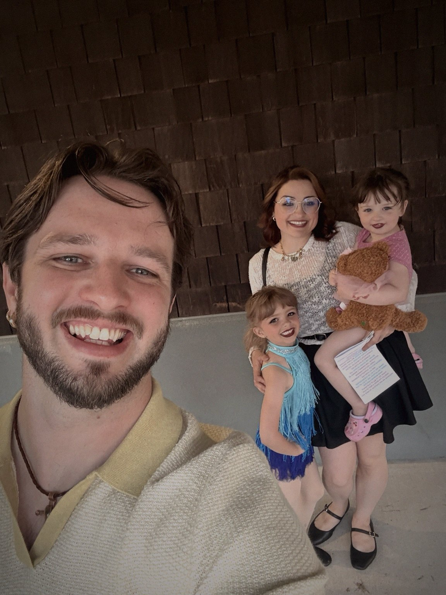
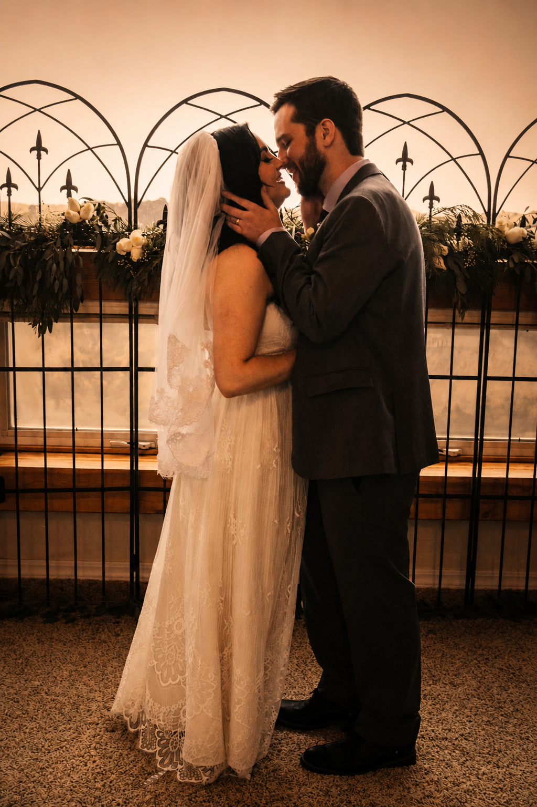
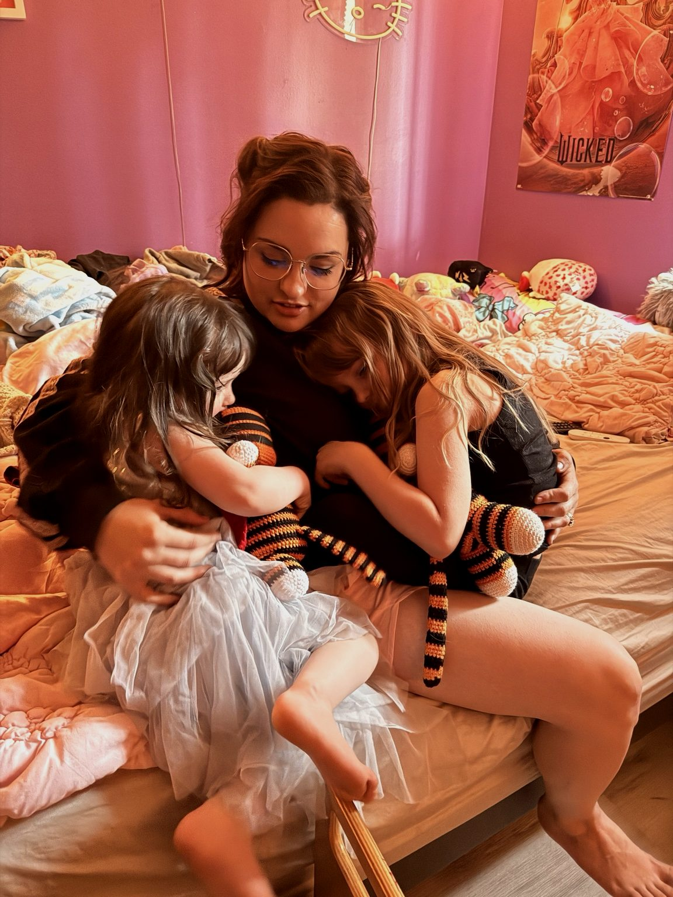

♥
Hi beautiful.
Every Single Time
For My Favorite Person
We did not exactly start off like some perfect love story.
I was awkward.
You were not immediately convinced.
I made this because sometimes the things that matter most deserve more than a text message.
So...
Welcome to a tiny little corner of the internet that exists for one reason.
You.

A tiny little corner of the internet, and somehow still not enough room for everything I love about you.
A Letter To You
I don’t think I’ve ever done the best job putting into words what you mean to me.
Life has a funny way of filling every day with responsibilities.
The girls.
The restaurant.
The house.
The salon.
Family.
The million little things that quietly steal time from us.
Somewhere between all of that, I realized there were things I wanted to tell you that deserved more than passing comments while making dinner or lying in bed half asleep.
So I made this.
Not because everything has been easy.
Not because we’ve never struggled.
But because even after everything we’ve been through...
You’re still the person I want to come home to.
You’re still the first person I want to tell good news to.
You’re still the person whose hand I instinctively reach for.
You’re still the person I want beside me when we’re eighty years old sitting on a porch making fun of each other.
Thank you for choosing me.
Thank you for building this crazy, beautiful life with me.

The crazy, beautiful life we built.
The Parts of Me You’ve Always Understood
The man you ended up with
If you’d asked either of us when we first met, I’m not sure this is how we would’ve pictured things turning out.
There were plenty of reasons
this shouldn’t have worked.
Somehow...
it became the best thing that ever happened to me.
Against all odds, despite a rough start and your best efforts to avoid me, here we are.
Over the years, I’ve changed a lot.
I used to be the guy who couldn’t order his own food or tell a waitress when my order was wrong.
You used to do all of that for me.
Now half the time you’re asking me to do it for you.
Somewhere along the way I got a little braver.
But there are some things that never changed.
I still overthink.
I still worry about the people I love.
I still check in more than I probably need to.
And I still care a lot about being a good husband, a good dad, and someone you can be proud of.
One of the things I’ve always loved about you is that you’ve seen all of that.
The good parts.
The messy parts.
And the parts I don’t always show everyone else.
You’ve always understood me better than most people do.

Still holding you through all of it.
My favorite kind of day isn’t some big exciting one.
It’s the kind of day I still want to steal with you.
A day where we wake up with nowhere to be.
Where we stay wrapped up in bed a little longer than we should.
Where we take a shower together.
Share tea.
Find somewhere good to eat.
Later, I’ll light the candles.
I’ll take my time with you.
And for a little while,
we’ll shut the whole world out.
Eventually, we’ll end up tangled together on the couch.
Watching anime.
Cuddling closer than we need to.
And falling asleep next to each other.
Those are the kinds of days I dream about with you.
One thing I’ve always hoped for is that our girls grow up embarrassed by us.
Not because we’re trying to be.
But because it’s obvious how much we love each other.
I hope they roll their eyes when we hold hands.
I hope they groan when we flirt.
I hope Cora keeps dramatically gagging every time we share a kiss.
And I hope Qwynn ends up doing the exact same thing.
I hope they think we’re ridiculous.
Because if they do, it means they grew up in a house where they never had to wonder whether their parents loved each other.
When I think about growing old with you, I don’t picture some perfect movie ending.
I picture us sitting on a porch somewhere laughing about all the dumb things we’ve done together.
I picture us telling stories about our girls and all the crazy dance parties we used to have in the living room.
I picture us arguing over who had the better twerking moves while the kids begged us to stop embarrassing them.
And somehow...
I picture us still holding hands through all of it.
If there’s one thing I hope you never question, it’s that I’ll always do everything I can to lift you above life’s waves.
Even when I’m struggling, I’ll do my best to make sure you’re still above water.
Through every version of my life, the best part has always been sharing it with you.
You still take my breath away.
Things I Don’t Tell You Often Enough
You know...
I don’t think I’ve ever been very good at explaining why I love you.
It’s easy to say you’re beautiful.
It’s easy to say you’re an amazing mom.
It’s easy to say you’re thoughtful.
All of those things are true.
But they’re not the reasons.
The reasons are the little things that nobody else gets to see.
I love that every time you decide to rearrange a room, you somehow turn it into a whole event.
You spend hours making everything just right.
And when it’s finally finished, you don’t even want to leave the room because you’re so proud of what you’ve created.
I love seeing how excited you get over something that makes our house feel a little more like our home.
I love your relationship with your hair.
Every time you dye it, I’m told this is the color.
“Nope. This one’s staying.”
You say it with complete confidence, like we’ve finally reached the end of your hair color journey.
Then a few weeks later, one of your clients walks in with a color you love.
Inspiration strikes.
And suddenly we’re talking about your next “forever color.”
I’ve learned not to question the process.
I’ve learned that “forever” in hairstylist years is about six weeks.
And honestly...
Somehow every color ends up looking like it was made for you anyway.
Every color. Every version. Still you.
I love that you say you don’t dance.
And then five minutes into a dance party with the girls, your hips are swinging right along with them anyway.
I love that there are little pieces of you that belong only to me.
The sly smile when you catch me staring.
The way you pretend I’m some stranger flirting with you and smile while saying,
“I’m sorry sir... I’m married.”
The little teasing glances.
The moments where you’ll quietly remind me there are parts of you meant only for my eyes.
The look you give me that says everything without saying a word.
Those moments still make my heart race.
I love when you nuzzle into my shoulder.
When you absentmindedly run your fingers or nails across my arm while we’re watching anime.
When you reach for my hand because it just feels right.
Those tiny moments mean more to me than you’ll probably ever know.
One of the greatest gifts you’ve ever given me wasn’t something you bought or wrapped up with a bow.
It was yourself.
And the beautiful family we’ve built together.
There was a time in my life when anxiety completely took over.
You learned every one of my tells.
You knew when I needed to leave before I even said anything.
You grabbed my hand before I asked.
You sat with me through panic attacks that neither of us deserved.
You carried me through one of the darkest seasons of my life.
And I don’t think I’ve ever told you enough how grateful I am that you stayed.
I honestly don’t know if I’d be the man I am today without that version of you.
One of my favorite things about you is how deeply you think.
Sometimes you’ll disagree with me for days.
Then you’ll disappear into your own thoughts.
Then you’ll come back a few days later with a brilliant new idea that suspiciously sounds exactly like the one I suggested earlier.
I’ve learned it’s best to admire your genius, nod in agreement, and pretend I had absolutely nothing to do with it.
And honestly...
I wouldn’t change that about you for the world.
Because when you finally land on an idea...
It’s completely yours.
I love that about you.
I also love the version of you that almost nobody else gets to know.
The one whose laugh turns into the cutest little snort when something catches her completely off guard.
The one whose thoughts spill out for an hour straight because your mind is chasing ten different ideas at once.
The one who surprises me by opening up and trusting me with parts of yourself you’ve never shared before.
The one who still makes me feel wanted just by the way you look at me.
The one who still catches me off guard after all these years.
I don’t love you because you’re perfect.
I love you because you’re you.
Because after all this time...
You still make me laugh.
You still make me blush.
You still surprise me.
You still give me butterflies.
You still make me want to spend the rest of my life finding new ways to make you smile.
And if I somehow got the chance to do it all over again...
I’d still take my shot and ask you to homecoming.
Every.
Single.
Time.
In high tide
or in low tide
♥
I’ll be by your side.

A promise we made long before this little website existed.

The kind of love I hope our girls never have to question.
Still my favorite place to be.
...
One Last Thing...
If you’ve made it this far...
Thank you.
For every laugh.
Every hug.
Every dance party.
Every anime binge.
Every morning shower.
Every cup of tea.
Every hand you’ve held out to me.
Every time you’ve chosen me.
I hope you know...
...
I’ll keep choosing you too.
Still not sorry for kissing you.
I loved you then.
I love you now.
I’ll love every version you become.
If There’s Anything You’ve Always Wanted To Tell Me...
You don’t owe me anything.
This isn’t a test.
This isn’t a scorecard.
I just wanted to leave a little space for you.
Maybe there’s something you’ve always wanted to tell me.
Maybe it’s something you love.
Maybe it’s something you miss.
Maybe it’s just something that made you smile while reading this.
Whatever it is...
I’d love to hear it.
Your Turn
No pressure. But also, yes pressure. (wink)Brutally honest note: I honestly couldn’t figure out how to get this form to actually send anywhere, so write it here, hit copy, then paste it into a text to me.
Nothing leaves this page automatically.